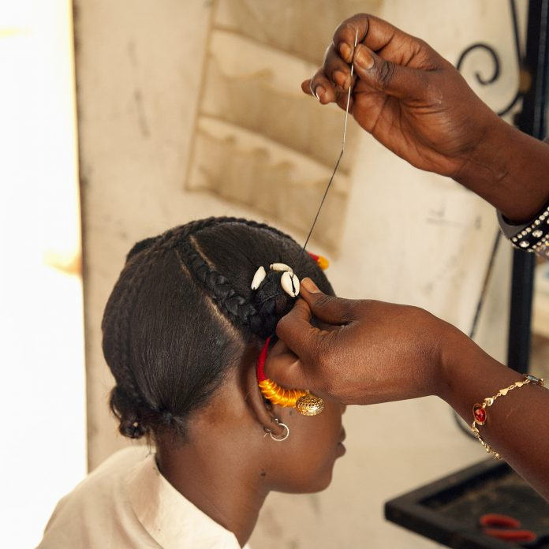

Tresses africaines • Dakar • Mamelles
Vos tresses.
Votre histoire.
Notre boulot.
Des tresses africaines soignées et élégantes, réalisées par Nina aux Mamelles ou directement à votre domicile à Dakar.
ADORA BEAUTY
Des tresses qui vous ressemblent
Que vous viviez à Dakar ou que vous soyez de passage au Sénégal, Nina vous accompagne pour une coiffure africaine mémorable. Tresses, braids, nattes et styles personnalisés : choisissez votre inspiration et échangez directement sur WhatsApp.
MES CRÉATIONS
Nos créations
Des looks élégants, lumineux et personnalisés inspirés des tresses africaines, pour chaque personnalité et chaque moment.

01
Beauté féminine
Box braids, knotless, nattes, twists et créations élégantes.
Découvrir →02
Styles masculins
Cornrows, braids et styles propres pour hommes et garçons.
Découvrir →UNE EXPÉRIENCE LOCALE
Un souvenir de Dakar à porter
Pour les visiteurs comme pour les habitués, une coiffure africaine peut devenir le plus beau souvenir d'un séjour. Nina prend le temps de comprendre le rendu souhaité et de réaliser un tressage propre.
Préparer mon rendez-vous →
À PARTIR DE 5 000 FCFA
Une idée de coiffure ?
Envoyez votre modèle à Nina sur WhatsApp pour obtenir un tarif personnalisé.